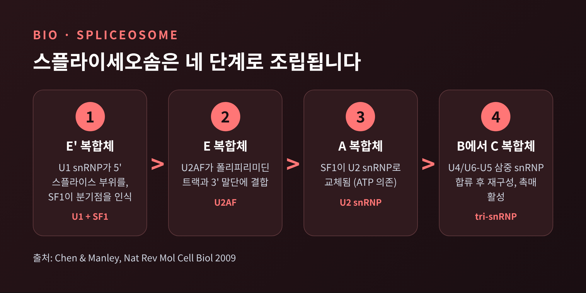
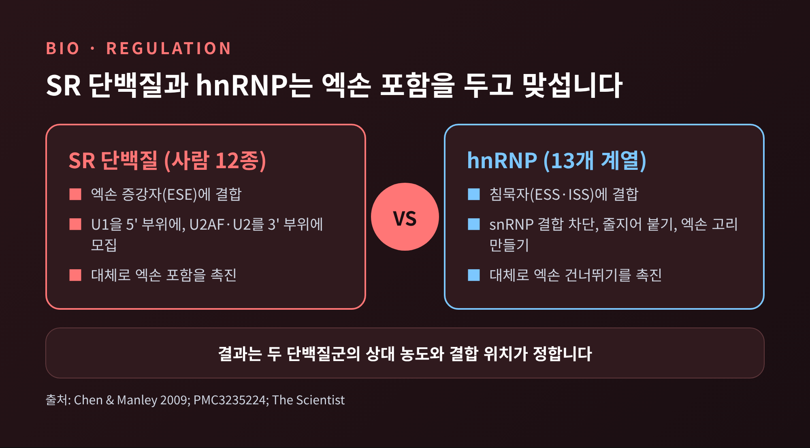
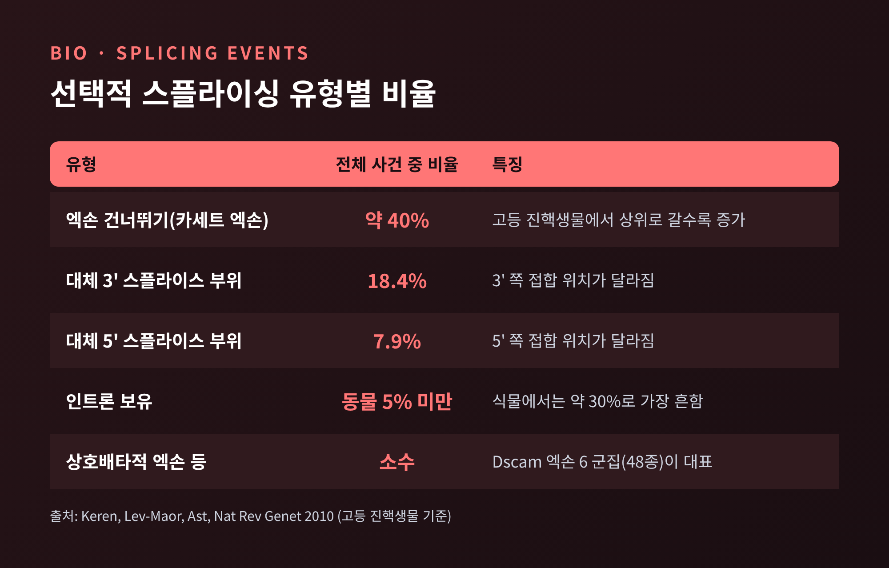
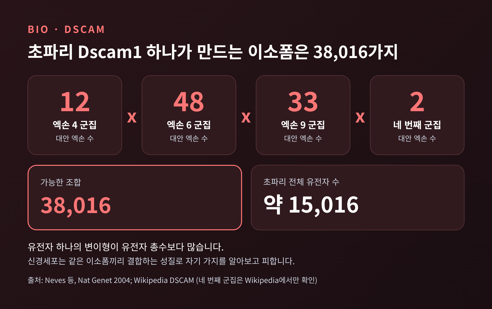
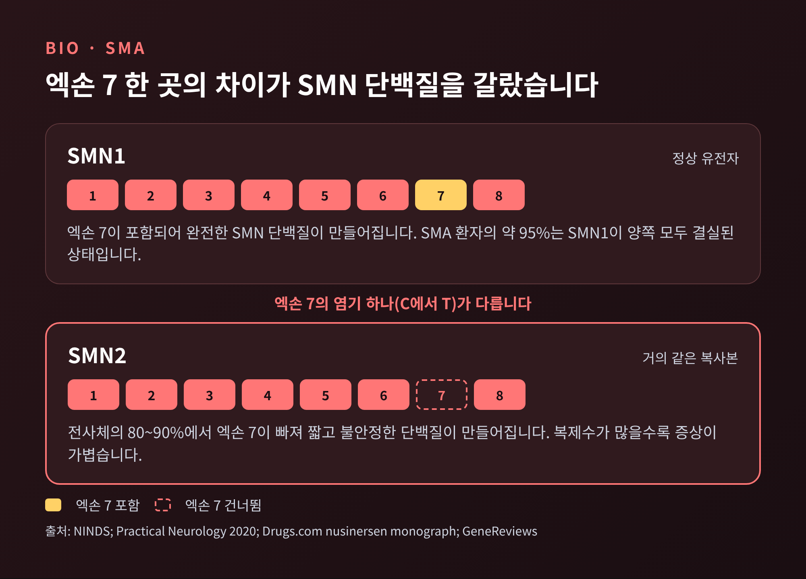
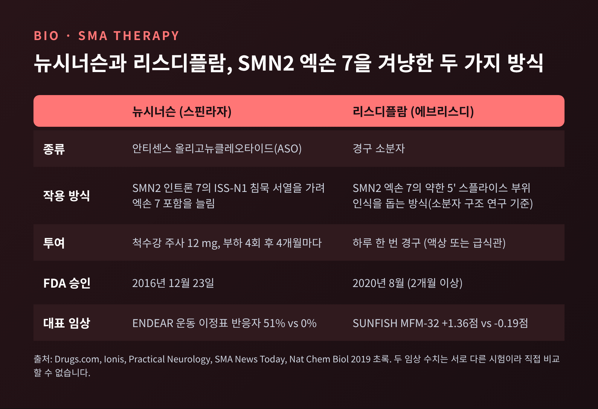

선택적 스플라이싱 원리, 엑손을 고르는 스플라이세오솜과 SMA 치료

이번 글에서는 선택적 스플라이싱(대체 스플라이싱)이 무엇이고, 세포가 어떤 기준으로 엑손을 고르는지 정리해 보겠습니다.
핵심 답은 이렇습니다. 스플라이세오솜이 엑손의 가장자리 서열을 읽고, 주변의 조절 단백질이 "이 엑손을 넣을지 뺄지"를 거들어 최종 조합이 정해집니다.
끝으로 이 원리가 어긋났을 때 생기는 척수성 근위축증(SMA)과, 이를 겨냥해 나온 안티센스 치료제 뉴시너슨, 소분자 약 리스디플람을 살펴봅니다.
■ 유전자 하나가 단백질 하나가 아닌 이유
예전엔 유전자 하나가 단백질 하나를 만든다고 배웠습니다. 지금은 설명이 달라졌습니다.
사람의 단백질 코딩 유전자는 약 2만 개입니다. 그런데 이 유전자들이 만들 수 있는 서로 다른 단백질은 9만 개를 넘는 것으로 추정됩니다(The Scientist). 약 2.4만 개 유전자에서 약 10만 개 단백질이 나온다는 서술도 있습니다(Keren 등, Nature Reviews Genetics 2010). 추정치마다 숫자는 조금씩 다르지만 방향은 같습니다. 유전자 수보다 단백질 종류가 훨씬 많습니다.
이 차이를 만드는 장치가 선택적 스플라이싱입니다. 2008년 Nature에 실린 15개 조직·세포주 RNA 서열 분석 연구는 다엑손 유전자의 92~94%가 이런 방식으로 읽힌다고 보고했습니다. 다른 총설들은 약 95% 또는 90% 이상이라고 적습니다. 연구마다 정의와 방법이 달라 수치가 조금씩 어긋나지만, "대부분의 유전자"라는 결론에는 이견이 없습니다.
같은 연구에서 소수 이소폼이 발현량의 15% 이상을 차지하는 유전자는 약 86%였습니다. 곁가지처럼 드물게 생기는 변이형이 아니라, 실제로 의미 있는 양이 만들어진다는 뜻입니다.
■ 스플라이세오솜은 어떻게 일하는가
진핵생물의 유전자는 엑손과 인트론이 번갈아 놓인 형태로 전사됩니다. 인트론을 잘라내고 엑손을 이어 붙이는 작업이 스플라이싱입니다. 이 구조를 처음 밝힌 "분할 유전자의 발견"으로 리처드 로버츠와 필립 샤프가 1993년 노벨 생리의학상을 공동 수상했습니다.
일을 맡은 기계가 스플라이세오솜입니다. U1, U2, U4, U5, U6 다섯 가지 snRNP(작은 핵 RNA와 단백질의 복합체)가 중심이고, 여기에 보조 단백질이 수백 개 붙습니다. 보조 단백질 수는 소스에 따라 150개 이상(PMC3235224)에서 300개 이상(The Scientist)까지 다르게 적혀 있어, 집계 범위에 따른 차이로 보입니다. 이 복합체는 두 번의 화학 반응으로 RNA를 자르고 엑손을 연결합니다.
조립은 정해진 순서를 따릅니다(Chen & Manley, Nature Reviews Molecular Cell Biology 2009).

핵심은 첫 단계입니다. U1 snRNP는 5' 스플라이스 부위(약 9염기의 요소)에 염기쌍을 맺습니다. 3' 쪽에서는 분기점 서열, 폴리피리미딘 트랙, 3' 접합부가 신호가 됩니다. 이 서열들이 U1 snRNA와 얼마나 잘 맞는지, 폴리피리미딘 트랙이 얼마나 끊기지 않고 이어지는지에 따라 "부위의 강도"가 정해집니다.
구조도 확인되었습니다. 칭화대 스이궁 연구팀은 엑손을 잇기 직전의 인간 스플라이세오솜을 약 3.8 Å 해상도로 해석했다고 소개합니다. 3' 스플라이스 부위를 알아보는 과정을 원자 수준에서 들여다볼 단서가 생겼다는 의미입니다. 다만 이 소개문은 학교 측 설명이어서, 세부 내용은 원 논문(Cell)에서 확인하시길 권합니다.
■ 엑손을 고르는 첫 번째 원리, 엑손 정의
사람 유전자에서 엑손은 짧고 인트론은 깁니다. 엑손은 대개 50~250염기이지만, 인트론은 100염기 미만에서 약 10만 염기까지 이릅니다.
긴 인트론을 가운데 두고 양쪽 끝을 찾기란 어렵습니다. 그래서 세포는 짧은 엑손을 먼저 하나의 단위로 알아봅니다. 이를 엑손 정의(exon definition)라 하며, 고등 진핵생물에서 주된 인식 방식으로 여겨집니다. 이후 인트론을 가로지르는 U1과 U2의 짝짓기로 넘어가야 실제 절단이 가능해집니다. 어느 엑손을 쓸지는 이 짝짓기 단계에서 정해질 수 있고, ATP가 쓰이며 선택이 굳어진다고 합니다.
여기서 선택적 스플라이싱의 기본 규칙이 나옵니다. 건너뛰어질 수 있는 엑손(카세트 엑손)은 대체로 항상 쓰이는 엑손보다 스플라이스 부위가 약합니다. 5' 부위가 강하면 엑손이 거의 항상 포함되고, 약하면 건너뛰며, 중간이면 중간 비율로 포함됩니다.
엑손은 스위치처럼 켜지고 꺼지는 것이 아니라, 부위의 강도라는 다이얼에 따라 확률적으로 포함됩니다. 이 다이얼을 돌리는 것이 다음에 볼 조절 단백질입니다.
■ 밀고 당기는 두 단백질군, SR과 hnRNP
엑손 안팎에는 증강자(enhancer)와 침묵자(silencer)라는 짧은 서열이 놓여 있습니다. 엑손 쪽은 ESE·ESS, 인트론 쪽은 ISE·ISS로 부릅니다. 여기에 어떤 단백질이 붙느냐에 따라 엑손의 운명이 달라집니다.
SR 단백질은 ESE에 붙어 U1을 5' 부위에, U2AF와 U2를 3' 부위에 불러 모읍니다. 사람에는 12종(SRSF1~12)이 있습니다. 반대편의 hnRNP는 13개 계열로, 대체로 스플라이스 부위 인식을 방해합니다. snRNP 모집을 막거나, 엑손을 따라 줄지어 붙어 조립을 막거나, 엑손을 고리 모양으로 밀어내는 방식을 씁니다.

중요한 점은 결과가 고정되어 있지 않다는 것입니다. 포함 여부는 두 단백질군의 상대적인 농도와 활성이 맞서는 결과인 경우가 많습니다. 같은 단백질이라도 결합 위치에 따라 정반대로 작동합니다. 예를 들어 NOVA 단백질은 결합 위치에 따라 엑손을 살리기도, 억누르기도 합니다.
수치로 보면 더 인상적입니다. 사람의 전사인자는 2,500개가 넘지만, 서열 특이적인 선택적 스플라이싱 인자는 50개 미만입니다. 적은 수의 인자가 조합과 농도 차이로 많은 조직별 패턴을 만든다는 뜻입니다. PTB에서 nPTB로의 전환 하나가 신경계 특이적 스플라이싱의 약 25%를 설명하고, NOVA2는 뇌 특이적 스플라이싱의 약 7%를 조절한다고 보고되어 있습니다.
그 밖에도 RNA의 이차 구조가 스플라이스 부위를 가리거나, RNA 중합효소가 전사하는 속도가 엑손 선택에 영향을 주기도 합니다. 엑손을 고르는 일은 서열 한 줄이 아니라 환경 전체의 합의로 이뤄집니다.
■ 같은 유전자에서 여러 단백질이 나오는 방식
선택적 스플라이싱에는 몇 가지 정해진 유형이 있습니다. 고등 진핵생물의 사건 비율은 다음과 같이 보고됩니다(Keren 등, 2010).

고등 진핵생물에서는 엑손 건너뛰기가 가장 흔합니다. 인트론 보유는 동물에서는 드물지만 식물·균류·원생생물에서는 가장 흔한 유형입니다. 또 선택적 스플라이싱은 무척추동물보다 척추동물에서, 하등 진핵생물보다 고등 진핵생물에서 더 흔합니다. 엑손 정의가 주된 인식 방식이 된 것과 맞물린 흐름으로 보입니다.
가장 극단적인 사례는 초파리의 Dscam1 유전자입니다. 이 유전자는 네 개의 가변 엑손 군집을 갖고 있고, 각 군집에는 12개, 48개, 33개, 2개의 대안 엑손이 있습니다(앞의 세 군집은 엑손 4, 6, 9번). 군집마다 하나씩 골라 이으면 12 × 48 × 33 × 2 = 38,016가지 조합이 가능합니다. 초파리 게놈 전체가 약 15,016개 유전자라는 점을 생각하면, 유전자 하나가 만드는 변이형이 유전자 총수보다 많은 셈입니다.

이 변이형들은 장식이 아닙니다. 신경세포는 같은 이소폼끼리 달라붙는 성질을 이용해 자기 자신의 가지를 알아보고 피합니다(자기 회피). 초파리 눈의 광수용체 세포 하나가 14~50종의 서로 다른 Dscam mRNA를 낸다는 추정도 있습니다(Neves 등, Nature Genetics 2004). 세포마다 다른 조합표를 갖게 되는 셈입니다.
참고로 38,016이라는 총수와 12·48·33 군집은 Neves 등의 논문과 위키백과에서 일치합니다. 2개짜리 네 번째 군집은 위키백과에서만 확인한 부분입니다.
■ 스플라이싱이 어긋날 때
스플라이싱은 정교한 만큼 쉽게 틀어집니다. 인간 질환 변이의 약 15~50%가 스플라이싱 관련 요소의 기능을 바꾼다고 알려져 있습니다(Baralle & Buratti, Clinical Science 2017). 일부 소개 자료는 "3분의 1 이상"이라고 적습니다. 범위가 이렇게 넓다는 것은, 아직 정확한 비율을 단정하기 어렵다는 뜻이기도 합니다.
흥미로운 사례가 망막색소변성증입니다. 스플라이세오솜의 핵심 구성 요소(PRPF3, PRPF8, PRPF31 등)는 온몸의 세포에서 쓰입니다. 그런데 이 유전자에 변이가 있어도 질환은 눈에만 나타납니다. 상염색체 우성 망막색소변성증의 15~20%가 이런 스플라이싱 인자 유전자 일곱 개에서 비롯되고, PRPF31 하나가 8.9%를 차지합니다. 한 가지 설명은 망막이 스플라이싱 요구량이 유난히 커서 약간의 결함에도 먼저 무너진다는 것입니다. 다만 저자들도 기전이 아직 분명하지 않다고 밝힙니다.
근긴장성 이영양증에서는 오류 스플라이싱 때문에 근육이 태아형 단백질 이소폼을 계속 만든다고 설명됩니다. 자폐 스펙트럼과 스플라이싱 인자 RBFOX1의 관련성도 보고되어 있습니다. 이 부분은 제가 확인한 자료가 개요 수준이어서, 자세한 기전은 다루지 않겠습니다.
■ SMA, 엑손 하나가 빠져서 생기는 병
이제 선택적 스플라이싱이 곧 치료 표적이 된 대표 사례로 넘어갑니다. 척수성 근위축증(SMA)은 운동뉴런이 소실되어 근육이 약해지는 병으로, 중증 영아형은 2세 이전에 사망할 수 있습니다. 빈도는 자료에 따라 신생아 5천~1만 명당 1명 안팎으로 보고됩니다.
원인은 운동뉴런의 생존에 필요한 SMN 단백질을 만드는 SMN1 유전자의 결손입니다. 환자의 약 95%는 5번 염색체의 SMN1이 양쪽 모두 사라져 있습니다.
그런데 사람에게는 SMN1과 거의 같은 복사본인 SMN2가 있습니다. 두 유전자의 결정적 차이는 엑손 7의 염기 하나(C가 T로 바뀐 것)이고, 이 차이는 1999년에 밝혀졌습니다. 이 한 글자 때문에 SMN2는 엑손 7을 자주 건너뛰고, 그렇게 만들어진 단백질은 짧고 불안정해 빨리 분해됩니다. SMN2 전사체의 80~90%가 엑손 7을 잃는다고 약물 정보는 설명합니다.

SMN2는 완전히 쓸모없는 것은 아닙니다. 일부는 정상 단백질을 만들기 때문에, SMN2 복제수가 많을수록 증상이 가볍습니다. 1형은 1~2카피, 2·3형은 3~4카피가 많았다고 합니다.
엑손 7이 건너뛰어지는 이유를 앞서 본 규칙으로 읽을 수 있습니다. 엑손 7의 5' 스플라이스 부위가 약하고, 침묵 요소가 있습니다. SMN2 엑손 7의 침묵자에는 hnRNP A1이 붙어 건너뛰기를 거들고, 엑손 7 뒤쪽 인트론 7에는 ISS-N1이라는 침묵 서열이 있습니다. 약한 부위에 억제 신호가 겹친 구조입니다.
■ 안티센스 치료: 침묵 서열을 가리다
여기서 발상이 나옵니다. 침묵 신호를 가리면 엑손 7이 다시 들어가지 않을까 하는 생각입니다.
뉴시너슨(상품명 스핀라자)은 SMN2 pre-mRNA의 ISS-N1에 달라붙도록 설계된 안티센스 올리고뉴클레오타이드(ASO)입니다. 2'-O-메톡시에틸, 포스포로티오에이트로 변형된 분자입니다. 억제 서열이 가려지면 엑손 7 포함이 늘고 전장 SMN 단백질이 늘어납니다. 2008년 마우스 연구에서 엑손 7 포함이 90%에 가까웠다고 합니다. ISS-N1은 2004년에 발견되었고, 초기에는 환자 단체 Cure SMA의 연구비가 이 발견을 뒷받침했습니다.
뉴시너슨은 혈액-뇌 장벽을 넘지 못해 요추천자로 척수강에 직접 주사합니다. 12 mg을 네 번 나눠 넣는 부하 투여 후 4개월마다 유지합니다. 자료 한 곳에는 유지 간격이 6개월로도 적혀 있어, 실제 투여 일정은 처방 정보로 확인하셔야 합니다.
2016년 12월 23일 미국 FDA가 가속 승인했고, SMA 최초의 치료제가 되었습니다. 영아형 SMA 대상 3상 ENDEAR에서 운동 이정표 반응자는 뉴시너슨군 51%, 대조군 0%였고, 사망 또는 영구 인공호흡의 위험은 47% 낮았습니다. 중간 분석에서는 반응자가 41%(21/51)였으니, 숫자가 달라 보이는 것은 분석 시점의 차이로 보입니다. 증상이 나타나기 전에 투여한 NURTURE에서는 25명 전원이 도움 없이 앉았고 22명(88%)이 혼자 걸었습니다.
2020년 8월에는 경구 약 리스디플람(에브리스디)이 승인되었습니다. 같은 SMN2 엑손 7 포함을 높이지만 방식은 다릅니다. 연구에 따르면 이런 소분자는 U1 snRNP가 엑손 7의 약한 5' 스플라이스 부위를 더 잘 알아보도록 돕습니다. 엑손과 인트론 접합부에서 돌출된 아데닌을 안정시켜 약한 부위를 강한 부위로 바꾸는 방식으로 설명되고, 연구진은 이를 "5' 스플라이스 부위 bulge repair"라 불렀습니다. 다만 제가 확인한 초록에는 약물 이름이 적혀 있지 않아, 리스디플람이 정확히 같은 방식이라고 단정하지는 않겠습니다.

리스디플람은 가정에서 하루 한 번 먹는 액상 약입니다. 2개월 이상의 영아부터 성인까지 대상으로, 전신에 작용해 신경계뿐 아니라 근육 같은 조직에도 닿습니다. 2·3형 대상 SUNFISH에서 운동 기능 점수(MFM-32)는 리스디플람군이 1.36점 올랐고 위약군은 0.19점 떨어졌습니다. 1형 영아 대상 FIREFISH는 41명 규모로, 도움 없이 5초 이상 앉는 능력이 나타났습니다.
■ 이 치료가 보여 주는 것, 그리고 남은 한계
짚어 두어야 할 한계도 있습니다. 뉴시너슨은 반복적인 척수강 주사가 필요하고, 리스디플람은 매일 먹어야 합니다. 두 약 모두 SMN1을 되돌리는 치료가 아니라 SMN2의 스플라이싱을 보정하는 치료여서, 투여를 이어 가야 효과를 유지합니다. 투여 후 장기 결과나 한국 내 승인·급여 현황은 제가 확인한 자료에 없어 다루지 못했습니다. 유전자를 보충하는 오나세므노진(AAV9로 SMN1 전달) 같은 다른 접근도 별도로 있습니다.
그럼에도 이 사례가 갖는 의미는 큽니다. 한 글자의 차이가 엑손 하나의 선택을 바꾸고, 그것이 한 아이의 운명을 갈랐으며, 그 선택을 거꾸로 되돌리는 약이 나왔기 때문입니다. 스플라이세오솜의 판단 기준을 이해했기에 가능했던 일입니다.
정리하면 이렇습니다. 스플라이세오솜은 스플라이스 부위의 강도를 읽고, SR 단백질과 hnRNP는 그 판단을 밀거나 당기며, 그 결과 유전자 하나가 여러 단백질로 나뉩니다. 이 균형이 깨지면 SMA 같은 병이 되고, 균형을 다시 맞추면 치료가 됩니다.
"엑손을 고르는 규칙을 알면, 어긋난 선택도 고칠 수 있다."
엑손 하나를 되돌리는 일이 이제 병원에서 이뤄지고 있습니다. 다음에 단백질 하나를 만나시거든, 그 뒤에 어떤 선택이 있었는지 한 번쯤 떠올려 보시기 바랍니다.